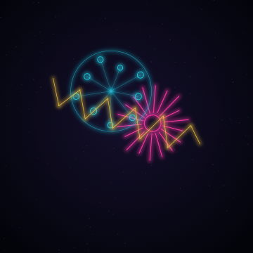
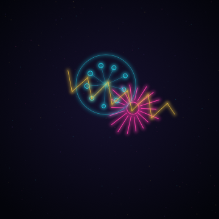
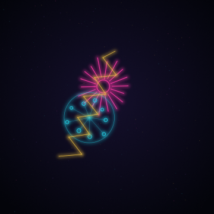
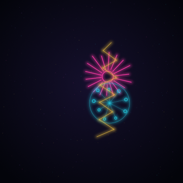
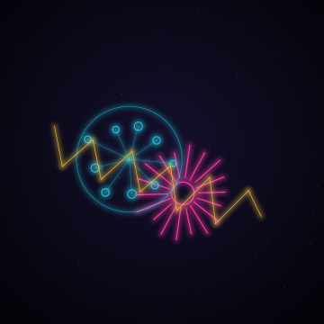
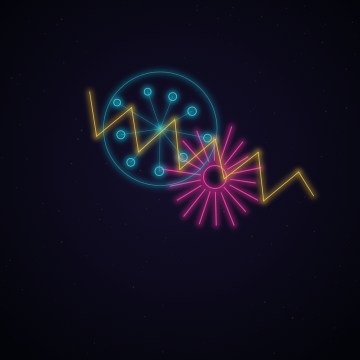
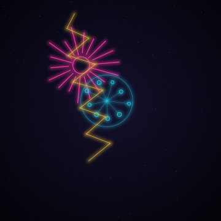
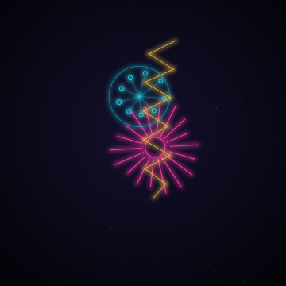

Keyframes Capability 20260818 v2
Deterministic per-location neon keyframes for the fal.ai video path: eight independently authored stills framed from the here-lies-trouble routes.
Izzi generation commit: 0d5db4217c93e606c9cb99dbe8741e11392037f2 · 8 passes
-

Frogtown keyframe
Deterministic neon still framed from the Frogtown corridor route.
-

DTLA Central Library keyframe
Deterministic neon still framed from the Central Library route.
-

MOCA Geffen keyframe
Deterministic neon still framed from the MOCA Geffen route.
-

Hauser & Wirth keyframe
Deterministic neon still framed from the Hauser & Wirth route.
-

Hammer Museum keyframe
Deterministic neon still framed from the Hammer Museum route.
-

Hi-Ho to Runyon keyframe
Deterministic neon still framed from the Hi-Ho to Runyon route.
-

Runyon Mulholland keyframe
Deterministic neon still framed from the Runyon Mulholland route.
-

Inspiration Point keyframe
Deterministic neon still framed from the Inspiration Point route.